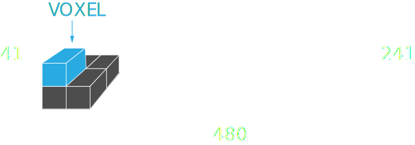

Carbon dioxide (CO2) is a greenhouse gas: it lets the sun light pass, but absorbs the long-wavelength energy from the Earth just like the glass of a greenhouse. Greenhouse gases are important because they keep the atmosphere warm and make life on Earth possible. However, in the last years, the concentration of CO2 kept rising to unprecedented levels because of human related activities.
On this map we visualize CO2 concentrations as a regular 3D grid with the resolution of 480 x 241 x 41. A single cell in this grid is called a voxel.
Voxels are colored based on the CO2 value: 360 ppm means 360 molecules of CO2 per million molecules of dry air. The values represent average measurements for the month of January.
Drag the slider under the histogram to filter voxels based on their CO2 values.
Change the year to see how the CO2 concentration changed in the last years.
1 In the northern hemisphere CO2 emissions can come from byproducts of burning gasoline or diesel fuel for vehicles or from industry like manufacturing, mining, oil and gas production. Read more.
Forest fires can also release large amounts of CO2 in the atmosphere.
2 Wildfires in the Amazon, caused by deforestation. Read more.
3 Widespread agricultural fires are a common occurrence in Central Africa. Read more.